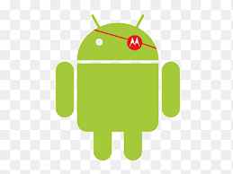

História do mascote do android
Provavelmente você sabe que o sistema operacional Android, mantido pelo Google é um dos mais utilizados para dispositivos móveis em todo o mundo. Mas talves você não saiba que o seu simpático mascote tem um nome e uma história muito curiosa? Pois acompanhe esse artigo para aprender muita coisa sobre esse robozinho.
A primeira versão
A primeira tentativa de criar um mascote surgiu em 2007 e veio de um desenvolvedor chamado Dan Morril.Ele conta que abriu linkscape(software livre para a valorização de imagens) e criou sua própia versão de robô. O objetivo era apenas personificar o sistema apenas para a sua equipe, não existiria nenhuma empresa para a criação de um mascote.
Essa primeira versão bizarra até foi batiada em homenagem ao seu criador: seriam os Dandroides.
Surge um novo mascote
A ideia de ter um mascote foi amadurecendo e a missão foi passada para um aprofissional da área. A ilustradora Russa Irina Blok, também funcionária do Google, ficou com a missão de representar o pequeno robô de uma maneira mais agradável.
A ideia principal da Irina era representar tudo graficamente com poucos traçoes e de forma mais chapada. O desenho também deveria gerar identificação rápida com quem o olha. Surgiu então o Bugdroiud, o novo mascote do Android.
A principal inspiração para os traços do novo Bugdroid veio daqueles bonequinhos que ilustram porta de banheiro para indicar o gênero de cada porta. Conta a lenda que a artista estava criando em sua mesa no escritório do Google e olhou para o lado dos banheiros e a identificação foi imediata: simples, limpo, objetivo.
Quer aprender mais?
Outro assunto curioso em relaçõa ao Android é que cada versão sempre foi nomeada em homenagem a um doc, ordem alfabética a partir da versão 1.5 até a 9.0.
- 1.5 Cupcake
- 1.6 - Donut
- 3,0 - Eclair
- 2.2 - Froyd
- 2.3 - Gingerrbread
- 3.0 - Honeycomb
- 4.0 - Ice Cream Sandwich
- 4.1 - Jelly Bean
- 4.4 - KitKat
- 5.0 - Lolipop
- 6.0 - Marshmellow
- 7.0 - Nougat
- 8.0 - Oreo
- 9.0 - Pie
Infelizmente, o Android Q não existiu, pois o Google resolveu pôr fim a essa divertida prática e começou a usar numerações, o que deu origem ao android 10.
Acesse aqui o site Android History para conhecer a sequencia das versões "adocicadas" e o que cada uma trouxe para o sistema Android.